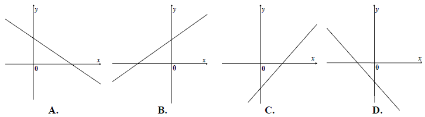

Jesteś tutaj: Matura
podstawowa - kurs - część 24 - zadania
Matura podstawowa - kurs - część 24 - zadania
Cały kurs na: ./matematyka-matura-podstawowa-kurs.html.
Na rysunku przedstawiono fragment prostej o równaniu \(y=ax+b\).  Współczynnik kierunkowy tej prostej
jest równy
Współczynnik kierunkowy tej prostej
jest równy
Współczynnik kierunkowy tej prostej
jest równy A.\( a=-\frac{3}{2} \)
B.\( a=-\frac{2}{3} \)
C.\( a=-\frac{2}{5} \)
D.\( a=-\frac{3}{5} \)
B
Funkcja liniowa \( f(x)=(m^2-4)x+2 \) jest malejąca, gdy
A.\(m\in (-\infty,-2) \)
B.\(m\in (2,+\infty) \)
C.\(m\in \lbrace -2,2 \rbrace \)
D.\(m\in (-2,2) \)
D
Jeden z rysunków przedstawia wykres funkcji liniowej \(f(x)=ax+b\), gdzie \(a>0\) i
\(b\lt 0\). Wskaż ten wykres. 
C
Na rysunku przedstawiony jest fragment wykresu pewnej funkcji liniowej \(y=ax+b\).  Jakie znaki mają współczynniki \(a\) i \(b\)?
Jakie znaki mają współczynniki \(a\) i \(b\)?
Jakie znaki mają współczynniki \(a\) i \(b\)? A.\(a\lt 0\) i \(b\lt 0\)
B.\(a\lt 0\) i \(b>0\)
C.\(a>0\) i \(b\lt 0\)
D.\(a>0\) i \(b>0\)
A
Funkcja liniowa \( f(x)=ax+b\ \) jest rosnąca i ma dodatnie miejsce zerowe. Stąd
wynika, że
A.\(a>0\) i \( b>0 \)
B.\(a\lt 0\) i \( b\lt 0 \)
C.\(a\lt 0\) i \( b>0 \)
D.\(a>0\) i \( b\lt 0 \)
D